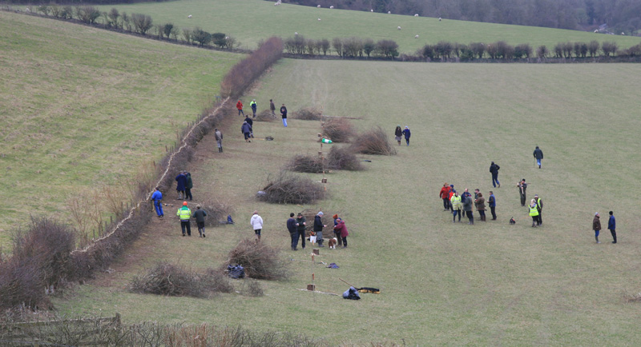

The 2015 competition was held at Parkdown Barns, Calbourne Road, Newport, PO30 4HP, by kind permission of Mr and Mrs Mike Morris.
Lead sponsors in 2015: Landscape Therapy; Isle of Wight Council; Wight AONB; Hants & IW Wildlife Trust

After the cancellation of the 2014 competition there was some concern when the 2015 competition site was subjected to a few days of heavy rain. But the Island's hedgelayers were not to be put off for two years in a row, and despite what might best be described as a challenging access route, once the competitors arrived at the competition site, a very nice stretch of hedge set on solid, dry ground proved to be ideally suited for the 2015 competition.
THis year featured an unusually high number of mainland competitors, with some new faces coming to enjoy the competition - and stay over to sample the Island's hospitality of course. It is encouraging to see the competition becoming an attraction in its own right and bringing some business to the Island in the off-season. Despite some poor weather in the morning by the time the judges were inspecting the finished work, the view across to the mainland was clear, and the rain held off long enough for the prize-giving to take place - an event that proved even more exciting than usual.
As reigning Open champion Tom Murphy is currently working abroad, he was unable to defend his title and there was the certainty that a new champion would come forward. With newcomer and prize-winning National hedgelayer Russell Woodham in the Open competition, there was a wildcard that nobody was discounting. Would the AONB Open Trophy be won by a mainland hedgelayer for the first time ever? Or would former Champion Dick Pulleine come back to reclaim the trophy he had lifted so many times before? The judges, Alan Ashby and Richard Grogan, gave the pitches their usual careful scrutiny, but the crowd was anxious to know the result. A great cheer went up when the news was announced that the new Open Champion was Whitwell man Oz Hoskyns, who had come second to Tom Murphy in both 2013 and 2012, and has been a regular competitor for over ten years. Second in the Open was Dorset man Russell Woodham, who was laying in South of England style for the first time and made an impressive debut at the competition. Russell said afterwards "A very good friendly contest, I would recommend a visit . Well done to all who were there. I would like to thank all involved for such a great welcome , help, hospitality, and I'm already looking forward to next year.". Third prize went to Dick Pulleine, who was only a point ahead of fourth place Alex Holmes.
The Novice class was also certain of a new champion, with 2013 winner Jim Clinton not defending. Mainlander Rob Wood was the winner, with Newchurch-based forestry worker Andy Toms coming in second.
The Team class saw the return of Dunsbury Farm, the only trophy-holder to defend their title this year. Alas for them, maybe distracted by celebrity weddings they scraped into fourth place, handing the Landscape Therapy Team Trophy to the 'Island Ploughmen' - a team which included former Open champion Rob Richards who has now completed what is thought to be a unique hat trick by winning the Novice class (2008), the Open class (2010) and now the Team.
Results
| Position | Class | Name | Score |
|---|---|---|---|
| 1 | Open | Oz Hoskyns | 77 |
| 2 | Open | Russell Woodham | 72 |
| 3 | Open | Dick Pulleine | 62 |
| 4 | Open | Alex Holmes | 61 |
| 5 | Open | Rick Temple | 60 |
| 6 | Open | James Cook | 58 |
| 7 | Open | Chris Sparkes | 47 |
| 1 | Novice | Rob Wood | 70 |
| 2 | Novice | Andy Toms | 60 |
| 3 | Novice | Michael Sparkes-Owen | 51 |
| 1 | Team | Island Ploughmen | 65 |
| 2 | Team | Jerry & The Mess-makers | 61 |
| 3 | Team | Halewood Team | 58 |
| 4 | Team | Dunsbury Farm | 55 |
Click here to see 2015 judges' scores table (PDF)
Winner of the W Hurst & Sons cup for the best hedge laid with hand tools:
Oz Hoskyns
The Peter Tonks £20 note trophy
A trophy was presented again on the day by former supreme national champion Peter Tonks, who awarded a £20 note for the straightest stakes and binding. The winner was Russell Woodham.
The judges' special award for the best laid poor stretch of hedge was not awarded in 2015.